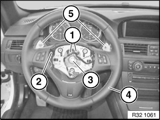
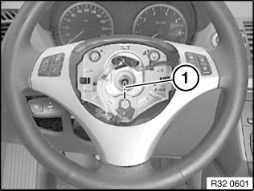
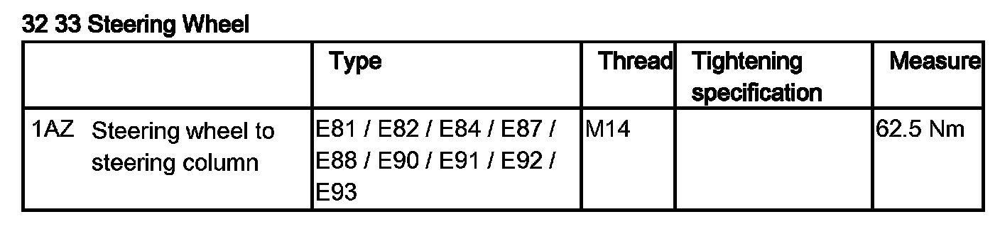

32 33 010 Removing and Installing/Replacing Sport Steering Wheel
32 33 010 Removing and installing/replacing sport steering wheelNote:
Wheel/chassis alignment is not necessary after the steering wheel has been removed and installed or replaced.
Necessary preliminary tasks:
^ Remove airbag unit

Set road wheels/steering wheel to straight ahead position.
Disconnect plug connection (1).
If necessary, disconnect plug connection (2) for steering wheel heating.
Release screw (3) and remove steering wheel (4).
Installation:
Make sure connecting lead(s) is/are correctly laid.
Tightening torque 32 33 1AZ.
Installation:
If necessary, modify shift paddles (5)

Installation:
Align sport steering wheel using markings (1) to steering column and attach.
Replacement:
^ Modify sport steering wheel cover/switches.
